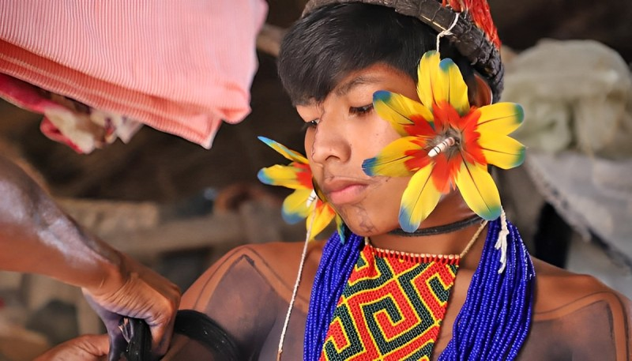

Hetohoky
In the male initiation ritual, known as Hetohoky or Big House, men are divided into men above, men below and men in the middle and, in the spatial arrangement of the ritual houses.
There is also the small house (downriver), the big house (upstream) and the Aruanã house, which is always in the middle of these. Therefore, the location of the Karajá villages has a reason for being in this or that place in relation to Araguaia, as does the arrangement of housing houses, cemeteries, ritual houses, according to a symbolism specific to Karajá culture.